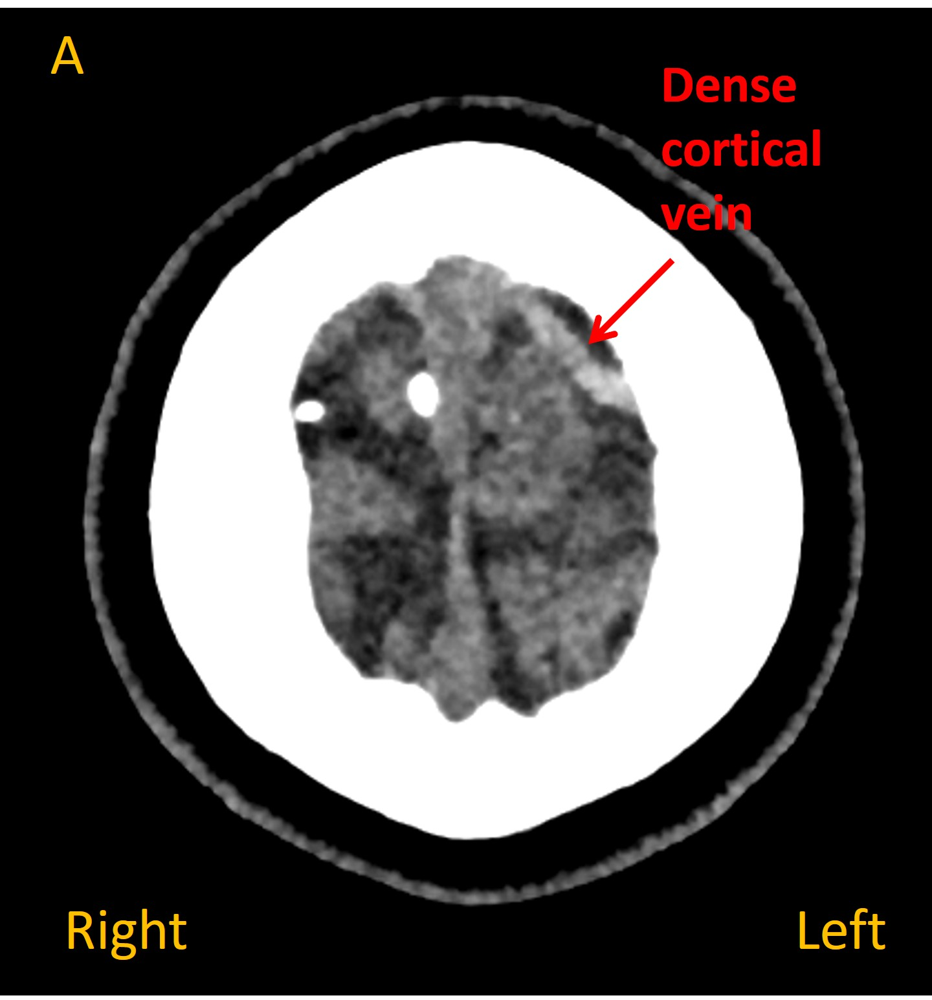
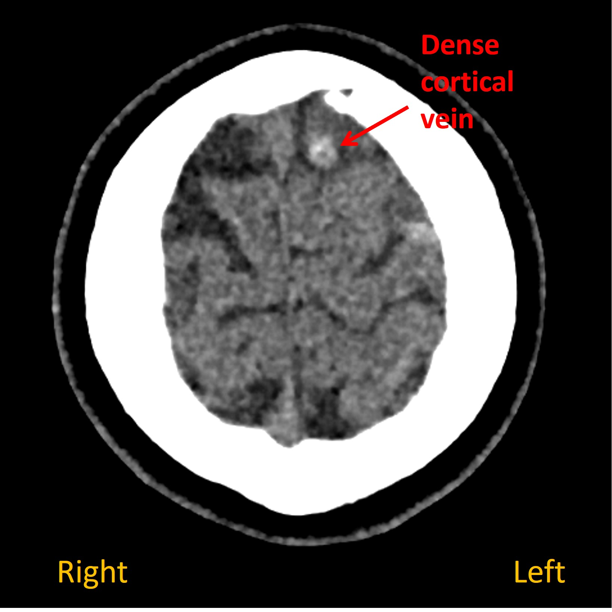
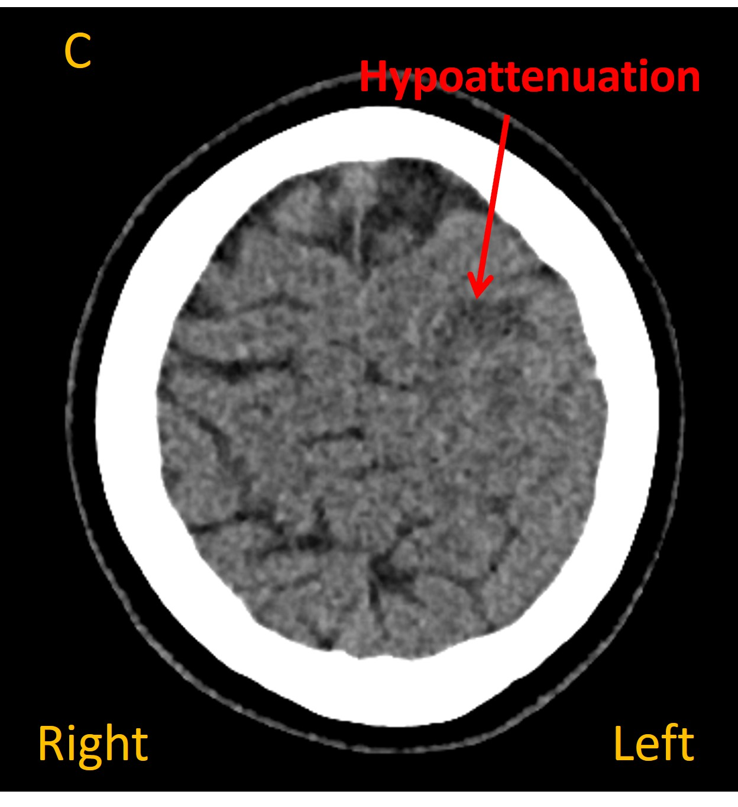
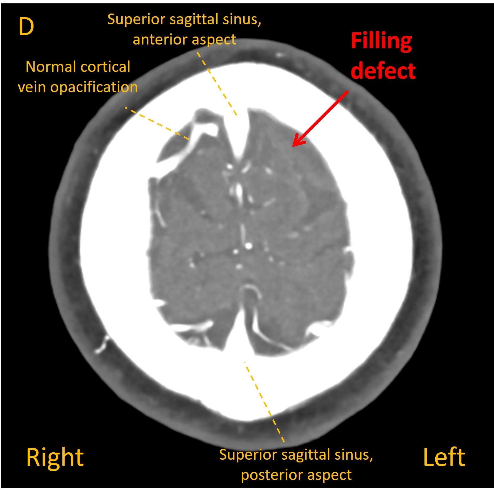
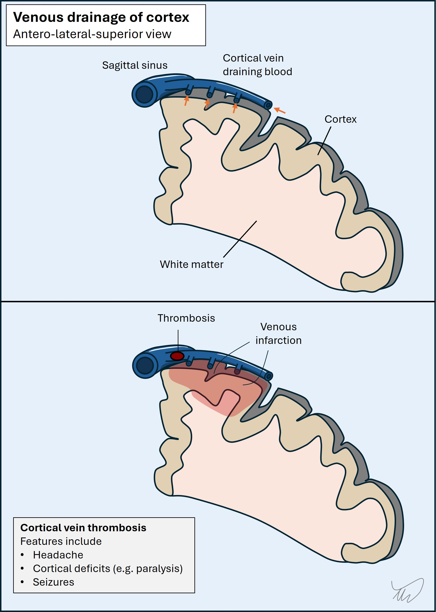

Case 6. Headache and arm movements during pregnancy
Outcome
On a plain CT head a dense cortical vein was visible overlying the left frontal lobe, suggestive of static blood ( Images A and B ). A dark area of hypoattenuation was visible in the underlying brain, suggesting a venous infarction (C). Contrast venography identified a filling defect in the vein - confirming cortical venous thrombosis ( D ).





The patient was started on anticoagulation with heparin to treat the thrombosis. She was also given levetiracetam therapy for seizure prophylaxis, with no further events.
Her headache resolved fully in the following days. The pregnancy proceeded without complications and she delivered a healthy baby at term.
A thrombophilia workup did not identify any other cause for thrombosis and it was felt the pregnancy was the causative risk factor. This meant that the risk of further events was not felt to be elevated - pregnancy was a transient, provoking state, rather than a lifelong condition - and after an MRI 6 months showed resolution of the thrombosis, she stopped anticoagulation and also stopped the levetiracetam. There were no further seizures, and she remained well - without further thrombotic events.
Final diagnosisAcute headache and focal motor seizures due to cortical vein thrombosis and venous infarction of left frontal lobe during pregnancy.
Key pointsReturn to Cases